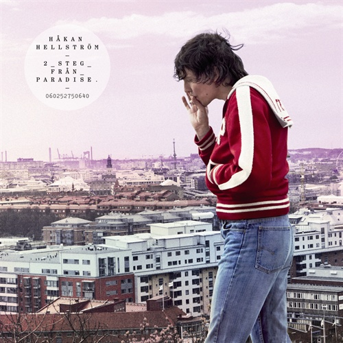
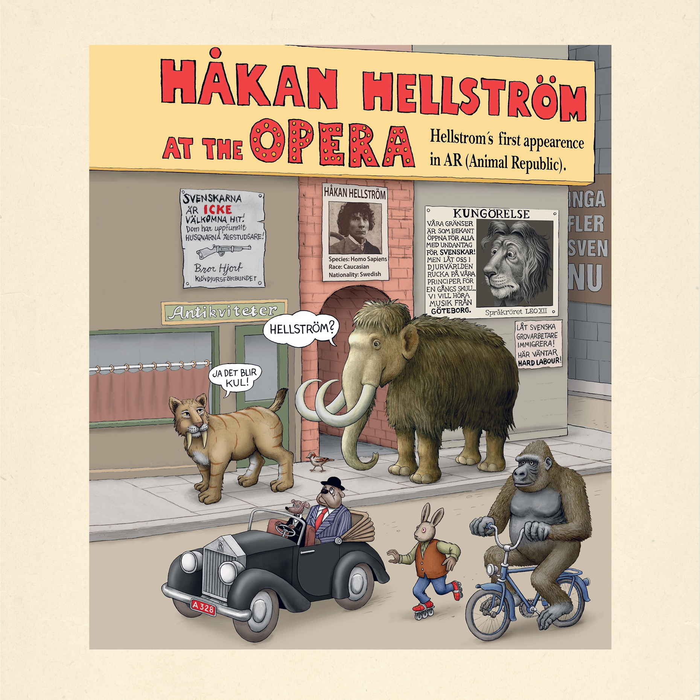

Känn Ingen Sorg För Mig Göteborg

Känn ingen sorg släpptes år 2000.
- Känn ingen sorg för mig Göteborg
- En vän med en bil
- Ramlar
- Nu kan du få mig så lätt
- Vi två, 17år
- Uppsnärjd i det blå
- Jag var bara inte gjord för dessa dar
- Magiskt men tragiskt
- Atombomb
- Dom dimmiga dagarna
Det Är Så Jag Säger Det
Det är så jag säger det släpptes år 2002.
- Mitt Gullbergs Kaj Paradis
- Förhoppningar Och Regnbågar
- Den Fulaste Flickan I Världen
- Kom Igen Lena!
- Här Kommer Lyckan För Hundar Som Oss
- Rockenroll, Blåa Ögon - Igen
- Gråsparven När Hon Sjunger
- Aprilhimlen
- Mississippi Kan Vänta
- Det Är Så Jag Säger Det
Ett Kolikbarns Bekännelser
Känn ingen sorg släpptes år 2000.
- Jag Har Varit I Alla Städer
- Brännö Serenad
- En Midsommarnattsdröm
- Dom Kommer Kliva På Dig Igen
- Bara Dårar Rusar In
- Hurricane Gilbert
- Gårdakvarnar Och Skit
- Magasinsgatan
- Vaggvisa För Flyktbenägna
Nåt Gammalt, Nåt Nytt, Nåt Lånat, Nåt Blått
Nåt Gammalt, Nåt Nytt, Nåt Lånat, Nåt Blått släpptes år 2002.
- 13
- Klubbland
- Så Länge Du Är Med Mig
- Jag Vill Ha Allting
- Precis Som Romeo
- Augisti I Helvetet
- Jag Hatar Att Jag Älskar Dig Och Jag Älskar Dig Så Mycket Att Jag Hatar Mig
- Aprilhimlen
- Evert Taube
- Fade Away
- Går Vidare
- Gatan Fram - Live
- Fairytale Of Newyork
Försent För Edelweiss
Försent för Edelweiss släpptes år 2008.
- Tro Och Tvivel
- För En Lång Lång Tid
- Zigenarliv Dreamin'
- Kärlek Är Ett Brev Skickat Tusen Gånger
- Jag Vet Inte Vem Jag är Men Jag Vet Att Jag Är Din
- Försent För Edelweiss
- Kär I En Ängel
- Sång I BUss På Villovägar 2007
- Dom Fyra Årstiderna
- Långa Vägar
- Flyg Lilla Fjäril Flyg
- Inte Skyldig Nån Nåt
- Exile On Wollmar Yxkullsgatan
2 Steg Från Paradise (Deluxe Version)
Nåt Gammalt, Nåt Nytt, Nåt Lånat, Nåt Blått släpptes år 2002.
- Det Här Är Min Tid
- Saknade Te Havs
- Shelley
- River En VAcker Dröm
- 2 Steg Från Paradise
- Jag Vet Vilken Dy Hon Varit I
- Dom Där Jag Kommer från
- Det Dom Aldrig Nämner
- Vid Protesfrabrikens Stängsel
- Man Måste Dö Några Gånger Innan Man Kan Leva
- Du Är Snart Där
- Det Här Är Min Tid- PT.2
- Dom Där Jag Kommer Från - Devil McDoom Remix
- River En Vacker Dröm - Alternativ Remix
- Det Dom Aldrig Nämner - Alternativ Remix
- Man MåsteDö Några Gånger Innan Man Kan Leva - Alternativ Remix
- 2 Steg Från Paradise - Instrumental
PS. Lycka Till Ikväll
PS. Lycka Till Ikväll släpptes 2010.
- Flyg Lilla Fjäril Flyg
- Mitt Gullbergskaj Paradis
- Kom Igen Lena!
- Aprilhimlen
- Det Är Så Jag Säger Det
- Augusti I Helvetet
- LåtOss Fly Precis Som Gil
- Försent För Edelweiss
Way Out West 2010
Way Out West 2010 släpptes år 2010.
- Känn Ingen Sorg För Mig Göteborg- Way Out West 2010
- En Vän Med En Bil - Way Out West 2010
- Ramlar - Way Out West 2010
- Nu Kan Du Få Mig Så Lätt - Way Out West 2010
- Vi Två, 17 År - Way Out West 2010
- Uppnsärjd I Det Blå - Way Out West 2010
- Jag Var Bara Inte Gjord För Dessa Dar - Way Out West 2010
- Magiskt, Men Tragiskt - Way Out West 2010
- Atombomb - Way Out West 2010
- Dom DImmiga Dagarna - Way Out West 2010
Det Kommer Aldrig Va Över För Mig
Det kommer aldrig va över för mig släpptes år 2013.
- Peace N Luv
- Det Kommer Aldrig Va Över För Mig
- Du Kan Gå Din Egen Väg
- När Lyktorna Tänds
- Pistol
- Valborg
- Tänd Strålkastarna
- Livets Teater
- Fri Till Slut
- Street Hustle
- Det Tog Så Lång Tid Att Bli Ung
Håkan Boma Ye!
Håkan Boma Ye! släpptes år 2014. Detta är livealbumet från Ullevi 2014.
- Tro Och Tvivel (Live)
- En Vän Med En Bil (Live)
- Du Kan Gå DIn Egen Väg (Live)
- Nu Kan Du Få Mig Så LÄtt (Live)
- Man Måste Dö Några Gånger Innan Man Kan Leva (Live)
- Zigenarliv Dreamin (Live)
- Vid Protesfabrikens Stängsel (Live)
- Jag Har Varit I Alla Städer (Live)
- Gårdakvaranar Och Skit (Live)
- Dom Där Jag Kommer Från (Live)
- Kom Igen Lena! (Live)
- Bränno Serenad (Live)
- När Lyktorna Tänds (Live)
- Shelley (Live)
- Klubbland (Live)
- Pistol (Live)
- För Sent För Edelweiss (Live)
- Jag Vet Inte Vem Jag Är Men Jag Vet Att Jag Är Din (Live)
- Mitt Gullbergs Kaj Paradis (Live)
- Kärlek Är Ett Brev Skickat Tusen Gånger (Live)
- Hela Huset (Live)
- En Midsommarnatssdröm (Live)
- Ramlar (Live)
- Det Är Så Jag Säger Det (Live)
- Valborg (Live)
- Känn Ingen Sorg För Mig Göteborg (Live)
- Det Kommer Aldrig Va Över För Mig (Live)
- Bara Dårar Rusar In (Live)
Du Gamla Du Fria
Det kommer aldrig va över för mig släpptes år 2013.
- #10 Dream
- I Sprickorna Kommer Ljuset In
- Runaway (Fri som en Byrd)
- Öppen Genom Hela Natten
- Jag Utan Dig
- Pärlor
- Du Gamla (That's Alright Since My Soul Got A Seat Up In The Kingdom)
- Din Tid Kommer
- Elefanten & Sparven
- Hoppas Att Det Går Bra För Dom Yngre Också
- Ingen Oro,Tjabo!
- Du Fria